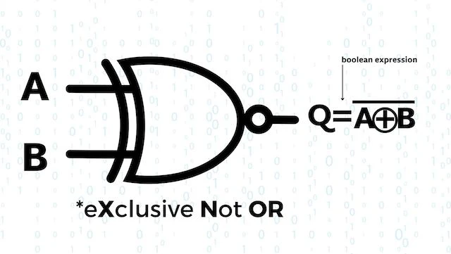

La porte logique " XNOR " :
- Une porte XNOR, également appelée "NON-OU exclusif" ou "fonction équivalence".
- C'est une porte logique qui produit une sortie à 1 lorsque ses entrées sont identiques.
- Elle génère un '1' en sortie, si et seulement si les deux bits en entrée sont égaux à '1' ou '0'.
- Elle génère un '0' en sortie, si et seulement si les deux bits en entrée sont différents entre eux.
- Cette porte logique est l'inverse de la porte XOR.

Grâce à l'image ci-dessus, vous bénéficiez d'une explication sous forme de tableau.
Pour retourner a l'accueil, cliquer sur le lien:
Retour à la page d'acceuil